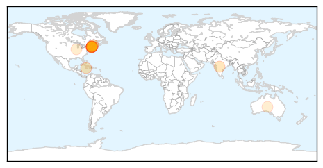
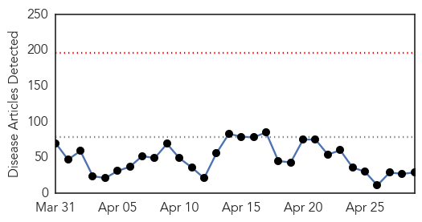

Measles
30-Day Web Trend
0 alerts, 0 warnings

30-Day Twitter Trend
0 alerts, 0 warnings

Article Locations
Article Confidences

Top Articles:
- 0.943
- Student's measles infection unlikely to cause outbreak
- 0.921
- Massachusetts reports first case of measles this year
- 0.888
- Maine Health Officials: Student Infected With Measles Visited Mall in Kittery
- 0.852
- PAHO/WHO office for Bahamas and TCI joins region in announcing elimination of Rubella
- 0.852
- Confirmed Measles Case With Travel to New Hampshire
- 0.808
- State investigating possible measles exposure in Portsmouth
- 0.806
- Portsmouth diners warned they may have been exposed to measles
- 0.775
- Maitland residents reminded to update measles vaccination
- 0.678
- NH Health Officials On the Lookout For Measles
- 0.633
- Officials: European Student with Measles Visited NH
- 0.612
- N.H. Health Officials Warn Of Possible Measles Exposure in Portsmouth
- 0.580
- State cautious that traveler with measles was in NH this month
- 0.579
- Radogno: Child health safety should be a priority
- 0.541
- Make Charitable Donations Online, Sponsor a Child, Charity Fundraising, Help Children, Help Communities
Top Tweets:
-
No tweets found for Apr 29, 2015
Ebola
30-Day Web Trend
0 alerts, 0 warnings

30-Day Twitter Trend
0 alerts, 0 warnings

Article Locations

Article Confidences

Top Articles:
- 1.000
- Communicating in a crisis like Ebola: Facts and figures
- 0.999
- Managing rumours and misinformation in West Africa
- 0.999
- Slow Ebola progress in affected nations shows need for response tweaks
- 0.998
- WHO releases next phase of Ebola response plan
- 0.998
- West and Central Africa Region Weekly Humanitarian Snapshot (21 - 27 Apr 2015) - Niger
- 0.997
- Why disease epidemics need input from anthropology
- 0.997
- Too Many Dying In Sierra Leone As Result Of Ebola Response Not Virus Itself – Report
- 0.994
- Health official says Dallas County needed more epidemiologists for Ebola
- 0.994
- Letter dated 16 April 2015 from the Secretary-General addressed to the President of the General Assembly (A/69/871) - Sierra Leone
- 0.992
- Copperbelt Prepares Preventative Measures against Ebola
- 0.992
- Experts urge vigilance, sustained measures against Ebola
- 0.989
- Minister delivers speech on Maternal and Child Health
- 0.985
- A paradigm shift in outbreak response
- 0.985
- Scientists race to test Ebola vaccines in humans
- 0.980
- Ebola Needs Analysis Project (ENAP): Multi-Sector Assessment - April 2015 - Liberia
- 0.979
- Back to school: Improving water and sanitation facilities in Ebola hit countries - Sierra Leone
- 0.964
- the implications of a worldwide epidemic
- 0.937
- eHealth Systems Africa Launches “Trace And Go”
- 0.837
- WHO welcomes Sendai focus on health - World
- 0.836
- Sierra Leone: Promoting health at the heart of the communities
- 0.799
- The tragic love story of America's first Ebola patient
- 0.775
- President Sirleaf Meets U.S. Surgeon General Vice Admiral Dr. Vivek Murthy and Delegation; Bids Farewell to Out-going Head of UNMEER, Ismail Cheikh Ahmed, now UN Envoy to Yemen
- 0.775
- Fiancée chronicles life with Texas Ebola victim
- 0.772
- Breakthrough in Ebola vaccine development
- 0.762
- MFDP Konneh in Town Hall with Liberian Diaspora
- 0.668
- Operators get creative selling troubled Africa
- 0.585
- Minister Konneh Lauds Govt. for Preventing another Rice Riot in Liberia
- 0.583
- Ebola Handling Curbed: ‘April 14’
- 0.564
- Konneh addresses Liberians abroad on happenings at home
Top Tweets:
- 0.959
- Health officials say CMC patient tested negative for Ebola - WSOC Charlotte http://t.co/l7ST8RPBkb ebola EVD
- 0.937
- Ebola Update: 26,277 confirmed, probable & suspected cases reported in 3 most affected countries, with 10,884 deaths. EbolaResponse
- 0.930
- Moyamba District in SierraLeone has now been free of the Ebola Virus Disease for 42 days. EbolaResponse is working.
- 0.929
- Carolinas Medical Center treating patient with Ebola-like symptoms - Charlotte Observer http://t.co/zwK4Yd9FEL ebola EVD
- 0.929
- Carolinas Medical Center treating patient with Ebola-like symptoms - Charlotte Observer http://t.co/aHn1pZW9xl ebola EVD
- 0.926
- Tracking Ebola virus genomes with ultra-small device - The Hindu http://t.co/CkqzFPJchL ebola EVD
- 0.889
- 2015 StrategicResponsePlan. West Africa Ebola Outbreak http://t.co/VCA7nJB2AI
- 0.878
- Too many dying in Sierra Leone as result of Ebola response not virus itself – report, via http://t.co/FiKwCZPbyR
- 0.851
- Fiancée chronicles life with Texas Ebola victim - Eyewitness News http://t.co/D1VSWe12GF ebola EVD
- 0.807
- Managing health crises after Ebola: Key resources - http://t.co/oXbQeldPQA http://t.co/NDxxjR8N18 ebola EVD
- 0.778
- Ebola drug test database - see which compounds have been tested for efficacy against the virus v http://t.co/ZPQ6A6uKnN EbolaResponse
- 0.714
- ebola. Managing rumours and misinformation in West Africa @scidevnet oopit http://t.co/MWbYgmu9F5
- 0.711
- Orphan Teen, 16, Tells How She Survived Ebola Only To Be Left Abandoned ... - The Inquisitr http://t.co/Jt5nZSqsg0 ebola EVD
- 0.707
- Vaccination teams defeat 'Ebola effect' - http://t.co/iHBGIUu0Mk http://t.co/IbDpecN3oP ebola EVD
- 0.706
- Managing health crises after Ebola: Key resources | @scidevnet http://t.co/KjRounAJnI
- 0.683
- HeritageFoundation to assess USresponse to Ebola outbreak http://t.co/k1LX2qHQ3c via
- 0.662
- 29 April news pouch on avianflu avianinfluenza Ebola EbolaResponse MERS is here: http://t.co/vy6jzEr4du
- 0.652
- Why disease epidemics need input from anthropology ebola https://t.co/YeNflGpglo via
- 0.627
- .@WHO weekly Ebola Situation Report: 33 new confirmed cases in the week to April 26, same total as previous week. http://t.co/EDuw1TjtF0
- 0.613
- Too many dying in SierraLeone as result of Ebola response not virus itself – report HIV TB http://t.co/CrVAO5EZkR
- 0.606
- Video. A fractured, top-down response in West Africa Ebola @scidevnet http://t.co/lAPXiIp1nG
- 0.566
- Carolinas Medical Center treating patient with Ebola-like symptoms - Charlotte Observer http://t.co/gJfMWyUBYX
- 0.563
- My word against Ebola: Empathy - International Federation of Red Cross and Red Crescent Societies http://t.co/iKqQajnwAu ebola EVD
- 0.555
- CMC treating patient with Ebola-like symptoms - WCNC http://t.co/vJd3nYrLjN
- 0.515
- Ebola has "critically damaged" Sierra Leone's ability to cope with other diseases, including malaria: http://t.co/wkMWO4UrbD via